Acerca de Nosotros
Por medio de esta pagina web yo Miller Stiven Bustos Daza, estudiante de Ingeniería Informática y un pequeño grupo de investigación, pretendemos dar a conocer un poco mas de la cultura y turismo que ofrece el municipio de Puerto López, en el departamento del Meta. Ya que nuestro municipio brinda una gran cantidad de experiencias con respecto a los sitios turísticos y actividades que se desarrollan y ofrecen a los visitantes que vienen tanto de otras partes de nuestro país como a los extranjeros.
Pretendemos mostrar los lugares y actividades que no siempre se nombran o se tienen en cuenta cuando pasan de visita por nuestro hermoso municipio y que, por medio de nosotros poder brindarle a los turistas, una mejor experiencia y lleven en sus mentes, corazones y celulares. Momentos e imágenes especiales que solo pueden obtenerlas aquí en nuestro municipio de Puerto López. “Con la colaboración de la Alcaldía Municipal de Puerto Lope-Meta, juntos podemos”
Nuestra idea surge a partir del momento en que estuvimos vicitando paginas web que promovieran el turismo en colombia. tomando este proyecto como una guia para el desarrollo de una pagina enfocada en el turismo bridado en el municipio de puerto lopez - Meta. el enlace de esta pagina web tomada como referencia queda aqui abajo.
https://colombia.travel/es
Nuestro Turismo
.jpg) 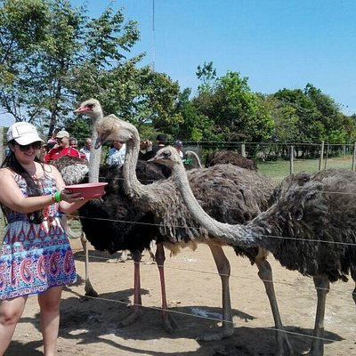
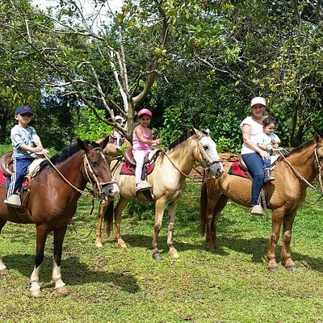
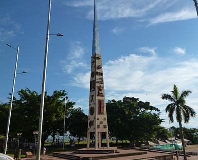
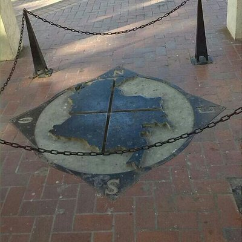
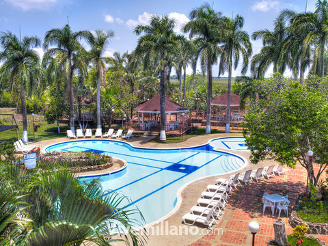
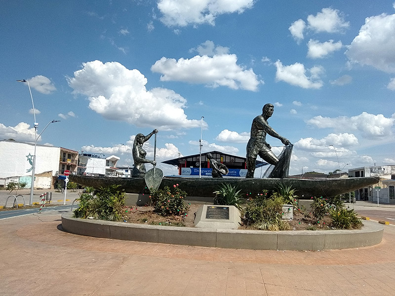
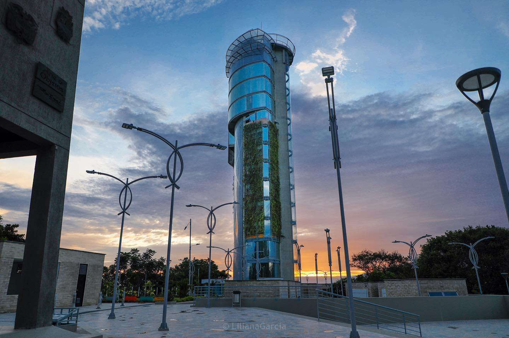
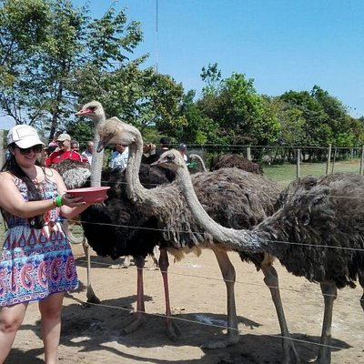
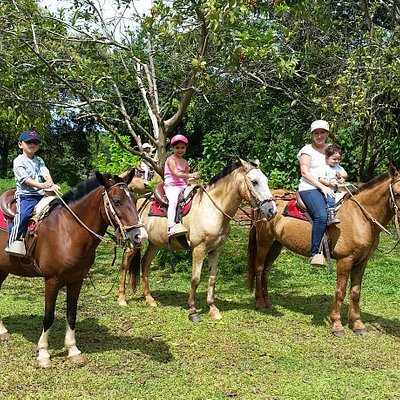
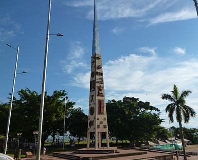
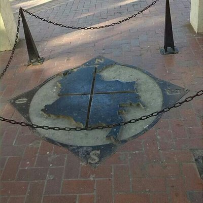
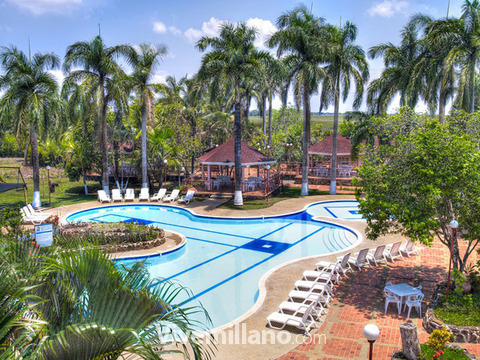
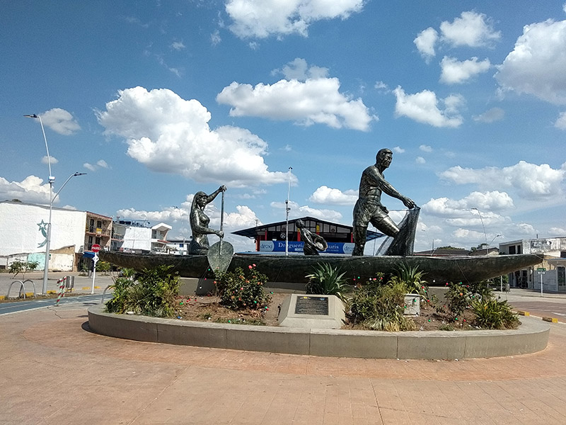
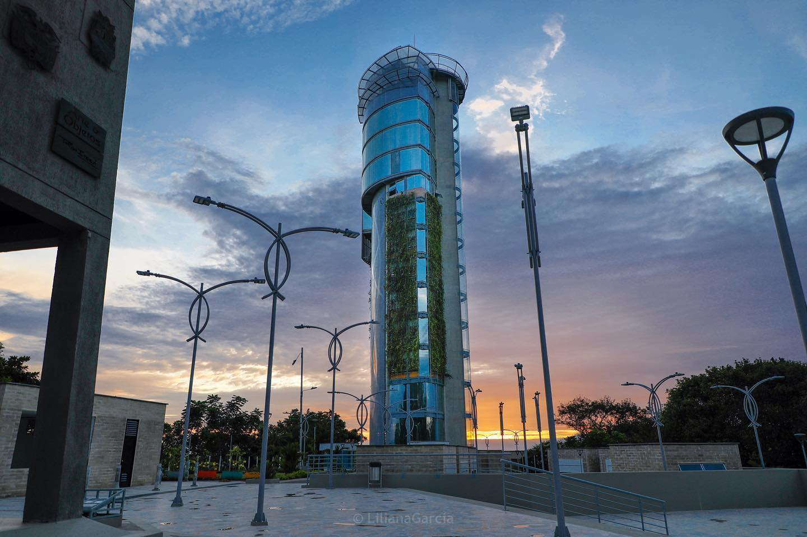
Testimonios
Monica A
Es un lugar que respeta la naturaleza, encontré animales en la reserva y en la oscuridad total admirar el cielo estrellado es maravilloso.
Víctor Hewitt
Hermoso sitio, actualmente en remodelación, estara listo para finales de abril. Preciosa vista de la inmensa llanura
Marcela Z
Recomendado la aventura por el rió...el buggy no ofrece mayor interés..Los precios de cada actividad promedian alrededor de los $ 32.000 COP.
Rafael B
Para entrar a la reserva se debe pagar COP 30.000 por adulto y COP 20.000 por niño. El precio está totalmente justificado por la naturaleza, la atención, el paisaje y lo bien mantenido del lugar.